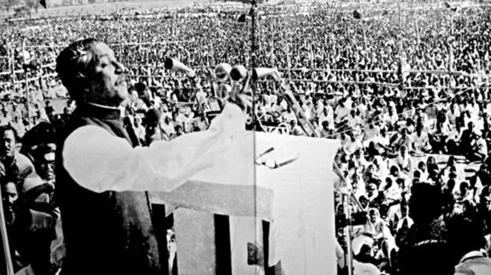

Bangabandhu Sheikh Mujibur Rahman
The architect of independent Bangladesh

The 7 March Speech of Bangabandhu was a speech given by Sheikh Mujibur Rahman, the founding father of Bangladesh on 7 March 1971 at the Ramna Race Course in Dhaka to a gathering of over 10 lakh people
Here is a timeline of Sheikh Mujib's life:
- 1920 - Sheikh Mujibur Rahman was born in the village of Tungipara under the then Gopalganj Subdivision (now District) of the then Faridpur District on March 17, 1920. His father Sheikh Lutfar Rahman and his mother Sheikh Sayera Khatun had four daughters and two sons. Sheikh Mujibur Rahman was their third child. His parents used to adoringly call him "Khoka".
- 1932/1933 - Sheikh Mujibur Rahman married Sheikh Fazilatunnesa (Renu). Together they had two daughters, Sheikh Hasina and Sheikh Rehana, and three sons, Sheikh Kamal, Sheikh Jamal and Sheikh Russel.
- 1943 - In 1943, Sheikh Mujibur Rahman was elected councillor of All India Muslim League from Bengal. He continued to serve admirably in this position till the partition of India in 1947.
- 1947 - Bangabandhu Sheikh Mujibur Rahman joined Huseyn Shaheed Suhrawardy’s move for a United Independent Bengal as a third free state along with India and Pakistan. However, the move was aborted and subsequently became the foundations of the Father of the Nation’s vision for an independent Bangladesh. Unlike many others, he did not rush into East Bengal (Pakistan) immediately after Partition, rather stayed over in Calcutta for a few weeks, joining Mahatma Gandhi’s Peace Mission along with his political mentor Huseyn Shaheed Suhrawardy.
- 1952 - On January 26, the then Prime Minister of Pakistan Khawaja Nazimuddin declared at a public meeting in the Paltan Maidan that Urdu would be the only state language of Pakistan. While in captivity, Sheikh Mujibur Rahman stayed in constant touch with those waging the movement to realize Bangla as one of the state languages. He issued key directives to make the movement a success even from the confines of his prison. On February 16, Sheikh Mujibur Rahman started a hunger strike unto death that lasted for 11 days and was released on February 27. On February 21, the agitated students came out on strike in order to press hard their demand to make Bangla as one of the state languages of Pakistan in defiance of the curfew enforced by the authorities. Salam, Barkat, Rafiq, Jabbar, Shafiur and many others were martyred when the police fired on a rally. In a statement released from the jail, Sheikh Mujibur Rahman expressed deep sorrow for those who lost their lives and continued protesting against the unjust police firing through hunger strike. The same year he visited China to attend World Peace Conference, where he delivered a resounding speech in Bangla, taking the cause of the mother language movement to a global audience.
- 1955 - Under the leadership of the Party General Secretary Sheikh Mujibur Rahman, the Awami Muslim League was renamed as the Awami League by dropping the word ‘Muslim’ to open the doors of the party to all, regardless of religion. This decision was made at the council session of the party during October 21-23, 1955. Sheikh Mujibur Rahman was once again elected as the General Secretary of the party in the Council.
- 1957 - Sheikh Mujibur Rahman was re-elected as the General Secretary of the Party at its council meeting held during June 13-14, 1957. From June 24 to July 13, he visited China on an official tour.
- 1961 - Sheikh Mujibur Rahman was released from jail after the high court declared his detention unlawful. He set up an underground network called `Swadhin Bangla Biplobi Parishad’ (Revolutionary Council for Independent Bangladesh) comprising leading student leaders in order to work for the independence of Bangladesh.
- 1962 - Sheikh Mujibur Rahman was again arrested by the Ayub government on February 6, 1962. He was freed on June 18 following the withdrawal of the four-year-long martial law on June 2. He travelled to Lahore on September 24 and with Huseyn Shaheed Suhrawardy and other opposition parties formed the National Democratic Front (NDF).
- 1966 - On February 5, 1966, Sheikh Mujibur Rahman presented his historic six-point programme known as the `charter of freedom of the Bengali nation’. It drew the road map for the independence of Bangladesh under the garb of greater autonomy. The programme hit hard at the roots of Pakistani colonial rule over the Bengalis. In the Council Meeting held during March 18-20, Sheikh Mujibur Rahman was elected the President of Awami League. He travelled far and wide in order to gain support for his 6-Point programme and was arrested 8 times, during the campaign, leading the regime to arrest him finally on May 8, 1966. He was imprisoned for nearly 3 years during this time.
- 1969 - The Agartala Conspiracy Case resulted in a nationwide student movement and mass upsurge demanding the withdrawal of the case and the release of Sheikh Mujibur Rahman. With continued pressure from the public, the Ayub Khan government on February 22 was forced to withdraw the Agartala Conspiracy Case and release Sheikh Mujibur Rahman and others. Afterwards, Sheikh Mujib was awarded with the title 'Bangabandhu' at a reception of millions of students and masses in a mammoth public meeting organized by Central Student Action Committee at the Race Course (now Suhrawardy Udyan) on February 23. At a discussion meeting held on December 5 to observe the death anniversary of Shaheed Suhrawardy, Bangabandhu Sheikh Mujibur Rahman declared that henceforth East Pakistan would be called Bangladesh.
- 1970 - Bangabandhu Sheikh Mujibur Rahman, the Awami League President, urged his countrymen to elect Awami League candidates on the basis of the 6-point demand in the country’s first general elections held on December 7 (National Assembly), and December 17 (Provincial Assembly), barring few seats in the cyclone affected coastal areas in the south. He chose 'boat' as the symbol to represent Awami League and the nation's hope. When a million people died in a catastrophic cyclone in the coastal areas on November 12, Sheikh Mujibur Rahman suspended the election campaign and rushed to the affected areas. Awami League achieved absolute majority in the general elections on December 7, winning 167 (including 7 women reserved seats) out of the 169 seats of the National Assembly in East Pakistan and 298 seats (including 10 women reserved seats) of the 310 seats of the Provincial Assembly of East Pakistan.
- 1971 - Following general Yahya khan’s postponement of the National Assembly session on March 1, 1971, only two days before the session was due to take place, every section of the Bengalis instantaneously came out onto the streets in massive demonstrations. The Bengalis’ aspirations for freedom reached an indomitable height. From March 1 onward Bangabandhu Sheikh Mujibur Rahman was virtually running East Pakistan as its de-facto head of government. On March 7, in his historic speech before the millions of people at the Racecourse Maidan (Suhrawardy Udyan), Bangabandhu Sheikh Mujibur Rahman called his fellow countrymen to take all out preparations for the war of liberation and independence of Bangladesh. In this grave situation Pakistan’s President General Yahya Khan came to Dhaka and held a series of meetings with Sheikh Mujibur Rahman between March 16 and March 24, none of which brought about any resolution. On the midnight of March 25, the Pakistan army launched its heinous campaign of genocide against the unarmed Bengalis. Sheikh Mujibur Rahman proclaimed the Independence of Bangladesh in the early hours of March 26. Right after the proclamation, he was arrested and taken to a Pakistani prison. On April 10, 1971, the first government of the People’s Republic of Bangladesh was formed, and Bangabandhu Sheikh Mujibur Rahman was elected as President by the constituent assembly. Syed Nazrul Islam was elected Vice President and acting President in the absence of Bangabandhu Sheikh Mujibur Rahman and Tajuddin Ahmed as Prime Minister. The government took oath of office on April 17 at a famous mango garden (Amrakanan) of Baidyanathtala in Meherpur, which is now known as Mujibnagar. After nine months of bloody war Bangladesh was liberated with the surrender of Pakistan occupation army on December 16, 1971. During August & September of 1971, the Pakistan Junta held a secret trial of Bangabandhu and sentenced him to death. The freedom loving people of the world was enraged and demanded the security of the President of Bangladesh. On December 27, the Bangladesh government sought Mujib's immediate and unconditional release.
- 1972 - The Government of Pakistan was forced to release Bangabandhu Sheikh Mujibur Rahman on January 8, under immense international pressure. On that very day, Bangabandhu Sheikh Mujibur Rahman traveled to London on his way to Dhaka. There at a crowded press conference in his hotel in London, he spoke to the world press and on January 9, met the British Prime Minister, Edward Heath. Prior to returning to Dhaka, Bangabandhu Sheikh Mujibur Rahman stopped over at Delhi, where the Indian President V. V. Giri and Prime Minister Indira Gandhi along with others welcomed him with grace. When the Father of the Nation reached Dhaka on January 10, millions of jubilant citizens of the newest country in the world welcomed him with open arms. He went straight from the airport to the Race Course Maidan now renamed Suhrawardy Udyan, where he addressed the people of independent Bangladesh for the first time. On January 12, Bangabandhu Sheikh Mujibur Rahman took charge as the Prime Minister of Bangladesh government and embarked on the reconstruction of a war-ravaged country. Within a period of three and half years, Bangabandhu laid the foundations of the new Republic by putting into effect several measures, including rehabilitation of 10 million Bengali refugees, withdrawal of all allied forces within 3 months of victory, formation of the constituent assembly & a constitution for the new state within 10 months, recognition of Bangladesh by more than a hundred state, Bangladesh’s membership of important international bodies including Commonwealth of Nations, the United Nations, NAM, OIC, enactment of International (Crimes) Tribunal Laws, etc.
- 1973 - Led by Bangabandhu Sheikh Mujibur Rahman, the Awami League secured 293 seats out of 300 in the Jatiya Sangsad (Parliament) in the first general elections held on March 7 in an independent Bangladesh and subsequently formed a new Government on the basis of the newly framed constitution. The World Peace Council awarded “Julio Curie” Peace Prize to Bangabandhu Sheikh Mujibur Rahman for his contribution to world peace on May 23. On September 6 Sheikh Mujib set off to Algeria to participate in the Non-Aligned Movement (NAM) Summit Conference. On the sideline of the summit he had bilateral talks with the world leaders.
- 1974 - Bangladesh received world recognition by becoming the 136th member of the United Nations on September 17. On September 25, at the 29th General Assembly of the United Nations, Sheikh Mujibur Rahman addressed the world in Bangla, the first ever Bangla speech delivered at the UN.
- 1975 - Father of the Nation Bangabandhu Sheikh Mujibur Rahman, the architect of Bangladesh, was assassinated by a handful of army renegades as part of a larger national and international political conspiracy hatched by anti-liberation forces in the pre-dawn hours of August 15. They murdered in cold blood every member of his family except his daughters Sheikh Hasina and Sheikh Rehana, who by fortune alone were abroad at that time. Bangladesh observes August 15 as the National Mourning Day and remembers the noblest and the greatest Bengali who ever lived, through his spirit, ideology, courage and love for the people of his nation.
"I have not seen the Himalayas. But I have seen Sheikh Mujib. In personality and in courage, this man is the Himalayas. I have thus had the experience of witnessing the Himalayas."
-- Cuban Leader Fidel Castro